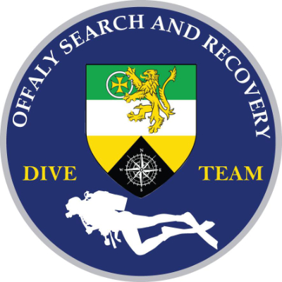

Members Area
Home
Search and Recovery
Donate to Offaly Search and Recovery
Payments
Variable amount items
Bottle fills
Boat trips
Dive bottle servicing
Fixed amount items
Annual Membership (Scuba) - €120
Annual Membership (Snorkel) - €50